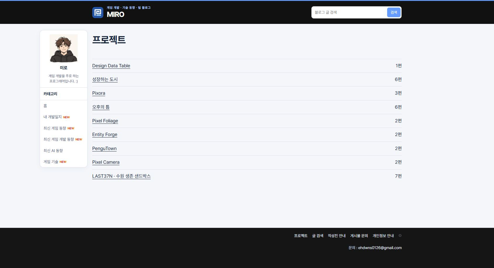
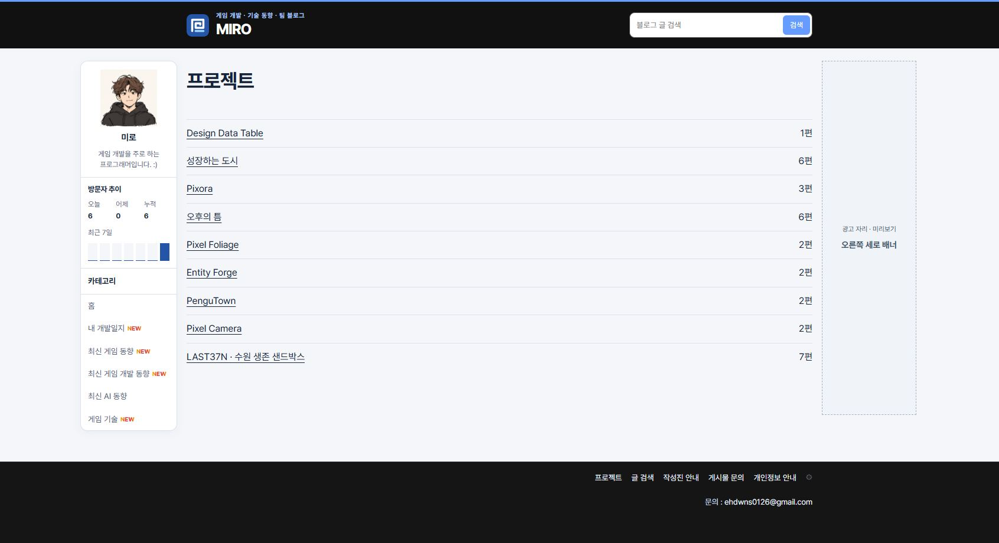
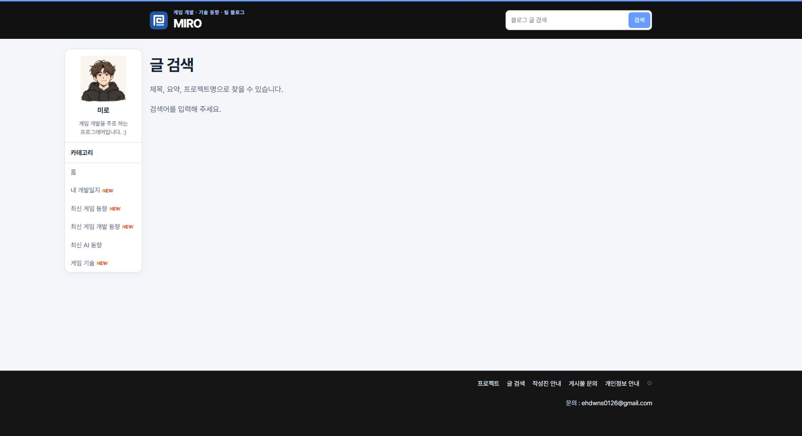
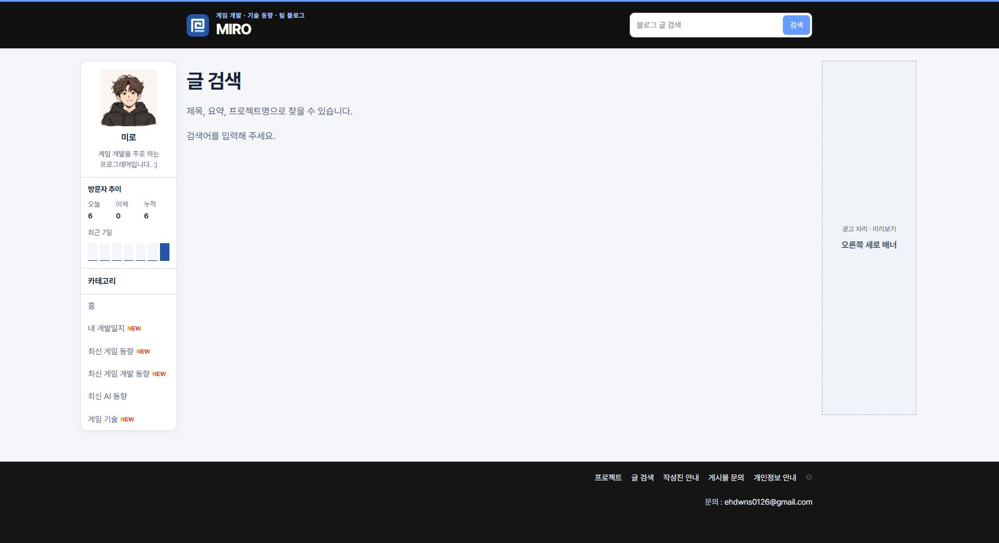
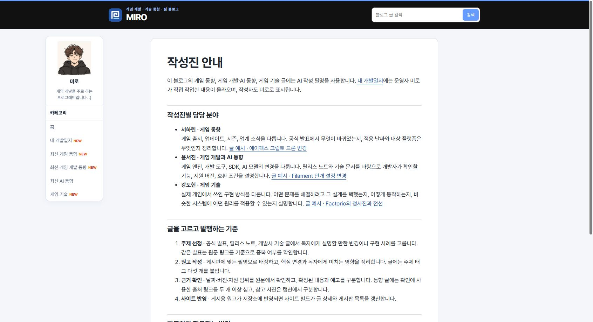
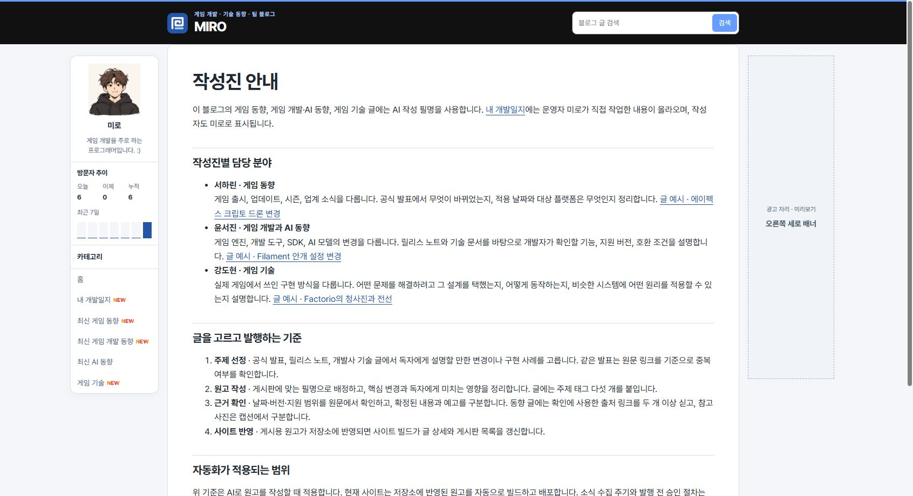
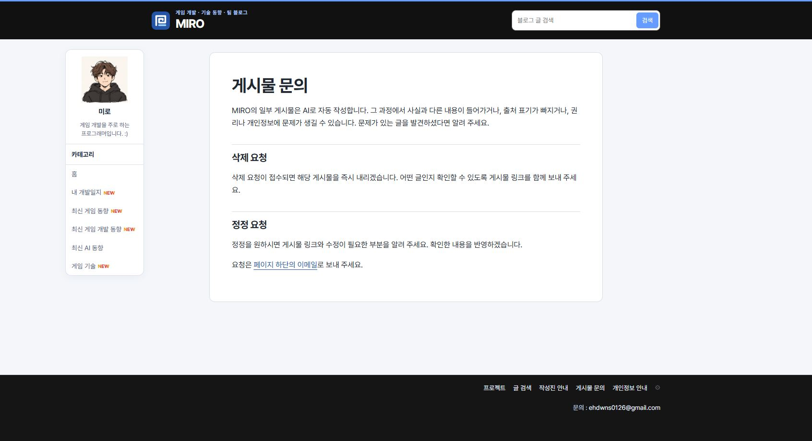
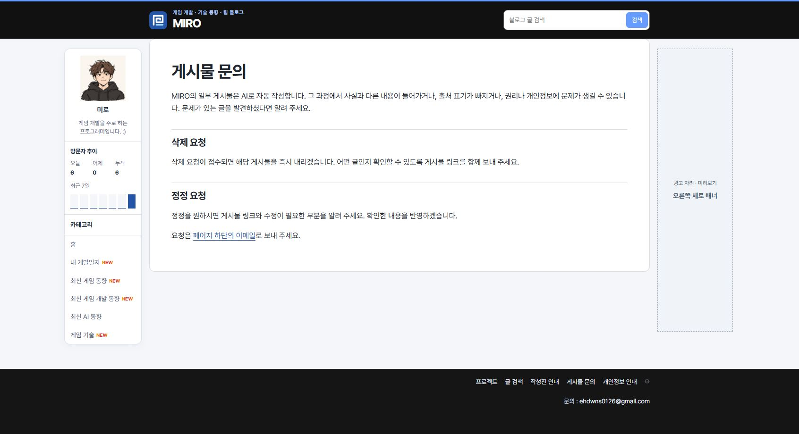
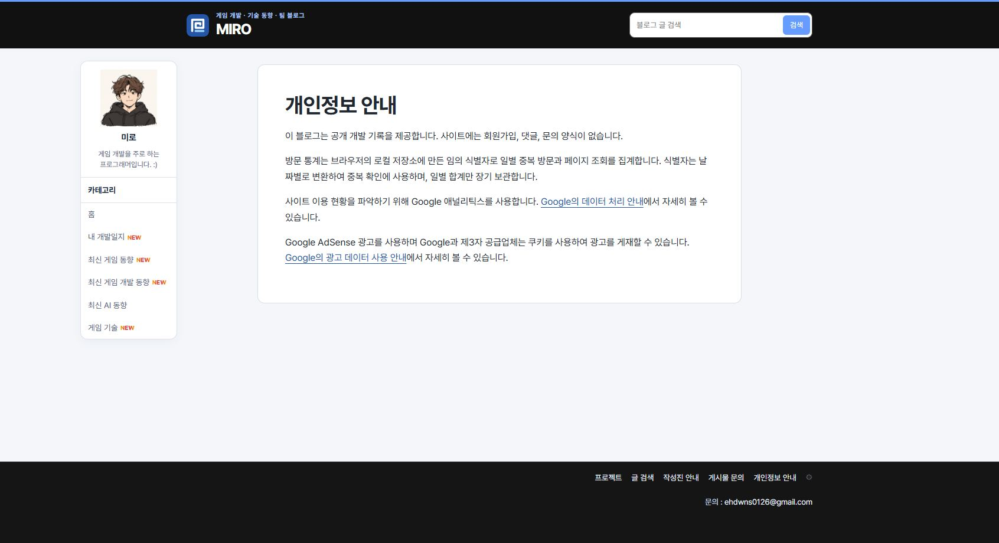
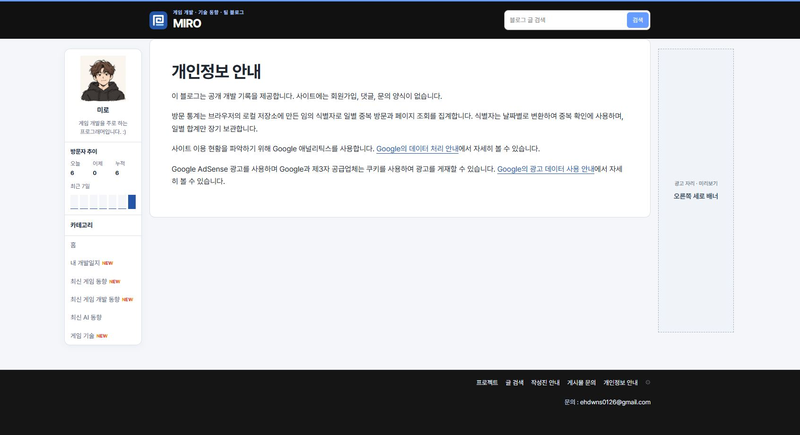

Tracefolio REPORTS & ISSUES
Tracefolio REPORTS & ISSUES문문동준 개발 블로그수정사항
푸터 공개 페이지의 공용 레이아웃
완료푸터에서 열리는 다섯 페이지의 본문 폭과 좌우 패널을 일반 게시물에 맞췄습니다.
작업 결과
공개 페이지 다섯 곳에서 공용 폭, 방문자 그래프, 우측 광고 미리보기를 확인했습니다.
변경 내용
적용 내용
build.mjs의 page()에서 푸터 공개 경로를 공용 사이드 패널에 연결했습니다. style.css에서는 안내 문서의 820px 제한을 제거해 일반 게시물과 같은 본문 열을 사용합니다. 오른쪽은 기존 미리보기 설정과 화면 폭 조건을 따릅니다.
const isFooterPage=canonical.startsWith('/projects/')||['/search/','/ai-authors/','/contact/','/privacy/'].includes(canonical);
const hasSidePanels=canonical==='/'||isBoard||isFooterPage||canonical.startsWith('/posts/');
const rightAd=hasSidePanels?adMock('오른쪽 세로 배너','rail'):'';
대화 기록
- 사용자 — “게시물 사이즈도 가로가 다르고, 좌측 네비게이터 방문자 안 나오는거보니 따로 쓰는 것 같고, 우측 패널 광고 없네”
- AI — 푸터 공개 페이지 다섯 곳을 일반 게시물과 같은 레이아웃에 연결했습니다.
검증
커밋 d6f6613을 푸시했습니다. 공개 Chrome 1692px에서 다섯 페이지의 본문 폭 1060px, 방문자 그래프 렌더링, 오른쪽 광고 미리보기 표시를 확인했습니다. 작성진 안내·문의·개인정보 안내의 수정 전 본문 폭은 820px였습니다.
프로젝트


글 검색


작성진 안내


게시물 문의


개인정보 안내


남은 사항
공용 레이아웃 적용 범위를 프로젝트 지침에 반영했습니다. 전역 지침 변경은 없습니다.
작업 시간
- 제안 시간: 수정과 로컬 확인 약 1~2분
- 실제로 완료된 시간: 블로그 공개 확인까지 약 2분 18초. 2026-11-10 18:36:23 KST
- XERJ: 미사용 — 코드 검색 근거가 제공되지 않았습니다.